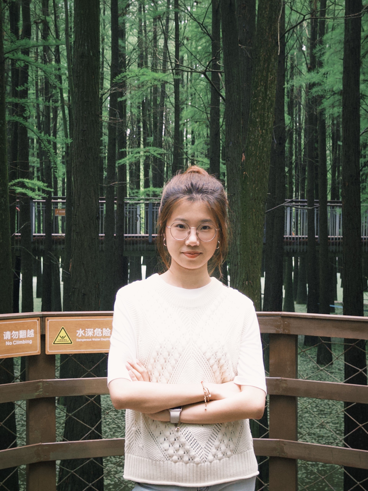

Slow mornings
A good cup of coffee, a notebook, and a calm start before the inbox takes over.

I'm a designer and developer who loves building friendly, thoughtful things for the web. I care about warm details, clear words, and making people smile when they use what I make.
A few of the little things that make my day brighter — and sneak into my work.
A good cup of coffee, a notebook, and a calm start before the inbox takes over.
Blues, greens, and misty teals — palettes that feel like a calm morning by the water.
My best ideas show up on a walk — headphones on, no destination, just wandering.
Three movies I can watch anytime — comfort in film form.